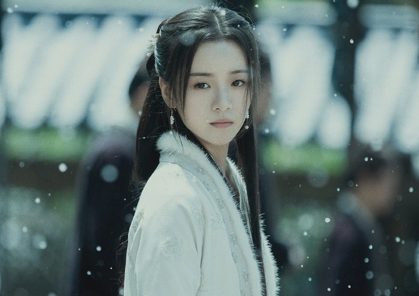

李庚希（一个新生代冉冉的新星）
个人简介
李庚希,中国内地新人演员,出生于浙江杭州,生日为3月2日,目前是徐静蕾工作室签约艺人。
2017年,主演科幻校园网络剧《同学两亿岁》从而进入演艺圈;同年9月,参演根据辛夷坞同名小说改编的都市情感剧《原来你还在这里》。
2018年7月1日,参与录制湖南卫视娱乐脱口秀节目《天天向上》;同年10月,参演都市情感励志剧《小欢喜》。
2019年6月,参演都市情感剧情片《兔子暴力》;同年7月,主演都市情感励志剧《二十不惑》。
2020年3月,主演古装言情喜剧《花好月又圆》。
2021年12月,出演玄幻励志剧《雪中悍刀行》。
早年经历
李庚希从小喜欢模仿,经常自己演《情深深雨濛濛》,还有宋丹丹、赵本山、小沈阳等春晚小品。
初中时去了美国读书,留学时选择社团,依照自己对表演的喜好加入了话剧社。
李庚希的父亲与徐静蕾小时候一起学过画画,所以在李庚希15岁时,李庚希的父亲在徐静蕾面前说起女儿的事。
刚好徐静蕾在筹备网剧项目,让李庚希回国试一试。
徐静蕾看到李庚希,看中了她的气质,于是将她签入自己的公司,并亲自教她将近十个月的表演培训课。
演绎经历
- 2017年9月,在根据辛夷坞同名小说改编的都市电视剧《原来你还在这里》饰演少年莫郁华;该剧于2018年11月6日在优酷上线 。
- 2018年5月30日,主演的科幻校园网络剧《同学两亿岁》在爱奇艺播出,同时为该剧演唱宣墨个人主题歌曲《让世界领教我的名字》。同年7月1日,随《同学两亿岁》剧组参与录制的湖南卫视娱乐脱口秀节目《天天向上》播出。
- 2019年6月,与万茜、黄觉和潘斌龙合作,参演都市情感剧情片《兔子暴力》。同年7月31日,参演由汪俊执导、黄磊和海清领衔主演的都市情感励志剧《小欢喜》在东方卫视和浙江卫视首播,李庚希在剧中饰演高三学生乔英子;凭借该剧李庚希凭该角色获得腾讯视频星光大赏“年度潜力电视剧演员”奖和国剧盛典“青春演艺新生代”奖
- 2020年1月18日,参与录制的喜剧脱口秀综艺节目《吐槽大会第四季》播出。同年7月14日,与关晓彤、卜冠今等主演的都市情感剧《二十不惑》在湖南卫视播出,其在剧中饰演肆意飒爽、恐社交有网瘾的罗艳。同年11月,与万茜、李庚希等主演的电影《兔子暴力》入围第33届东京国际电影节“东京首映2020单元”。
- 2021年4月,在都市情感剧《月里青山淡如画》中饰演“四色视觉者”秋媛。同年6月8日,与黄俊捷搭档主演的古装言情喜剧《花好月又圆》开播,李庚希在剧中饰演怪力少女小丸子
- 。同年6月16日,参演的时代报告剧《我们的新时代》在北京卫视、东方卫视首播,李庚希在单元《美丽的你》中饰演何妙云。同年8月14日,主演的电影《兔子暴力》上映。12月15日,与张若昀、胡军合作主演的古装励志传奇剧《雪中悍刀行》在腾讯视频和CCTV-8联合播出,李庚希饰演女主角姜泥。同年12月20日,特别出演励志青春剧《二十不惑2》。
- 2022年1月9日,与胡军、沙溢等领衔主演的励志体育竞技剧《超越》在央视一套播出,在剧中饰演专业运动员——短道速滑小将陈冕,现在在热播中。
人物评价
尽管出道时正值17岁,但是李庚希已表现出沉稳而大气的明星风范（瑞丽评)。
李庚希不仅颜值清新自然初恋感满满,更与年轻时的徐静蕾有几分神似;李庚希在拍摄《同学两亿岁》时虽然只有17岁,但演技却生动自然,颇受好评。
在《原来你还在这里》中,李庚希将青涩的校园感诠释得十分到位（网易娱乐评)。李庚希外形有自然的质感,气质很干净纯粹,性格比较开朗（徐静蕾评)。
李庚希的相貌具有很强的可塑性,在《小欢喜》中长发的模样和剪了利落的短发的她,判若两人,但是谈笑间,她又还原了剧中英子的模样（《新京报》记者张坤玉评)。
个人写真
剧照
